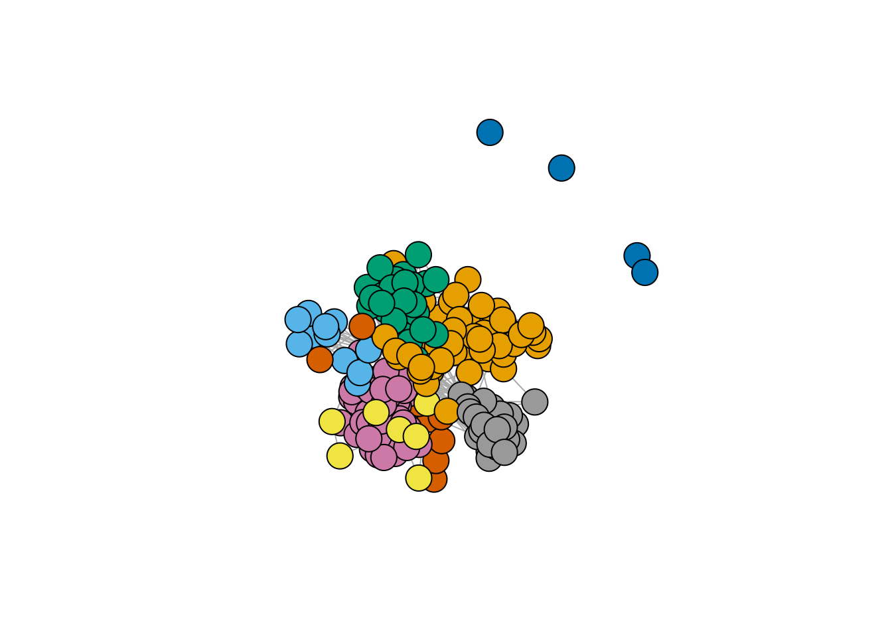
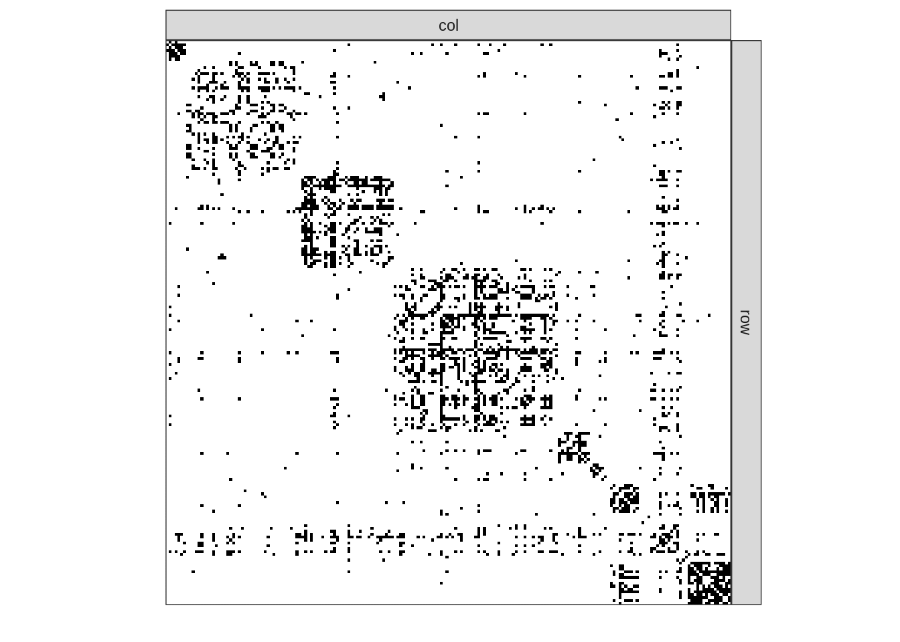
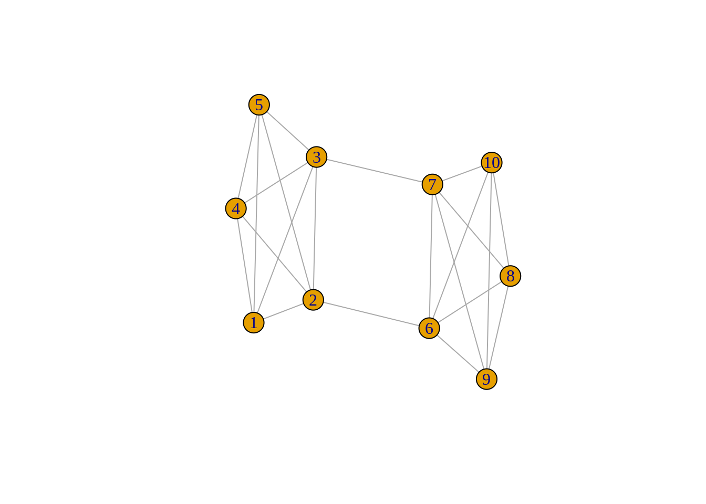

library(tidyverse)
library(igraph)
library(missSBM)
library(sbm)
theme_set(theme_bw())Graph clustering
Lecture Notes
Preliminary
Functions from R-base and stats (preloaded) are required plus packages from the tidyverse for data representation and manipulation. The package igraph is a great library for network data manipulation (interface exists in Python)
We will also use the package mixtools, which implements EM for simple mixture models to check our own implementation.
$$
% definitions related to %%definitions related to convergences
%————————————————————————-% % Definitions %————————————————————————-%
\newcommand{W}{} \newcommand{W}{} \newcommand{W}{} $$
1 Introduction
1.1 Network data and binary graphs: minimal notation
A network is a collection of interacting entities. A graph is the mathematical representation of a network.
In what follow, a graph \mathcal{G}=(\mathcal{V},\mathcal{E}) is a mathematical structure consisting of
- a set \mathcal{V}=\left\{1,\dots,n\right\} of vertices or nodes
- a set \mathcal{E}=\left\{e_1,\dots,e_p:e_k=(i_k,j_k)\in (\mathcal{V}\times\mathcal{V})\right\} of edges
- the number of vertices |\mathcal{V}| is called the order
- the number of edges |\mathcal{E}| is called the size
The connectivity of a binary undirected (symmetric) graph \mathcal{G}= (\mathcal{V},\mathcal{E}) is captured by the |\mathcal{V}|\times |\mathcal{V}| matrix W, called the adjacency matrix (W)_{ij} = \begin{cases} 1 & \text{ if } i \sim j,\\ 0 & \text{otherwise}. \end{cases} For a valued of weighted graph, a similar definition would be
(W)_{ij} = \begin{cases} w_{ij} & \text{ if } i \sim j,\\ 0 & \text{otherwise}. \end{cases} where w_{ij} is the weight associated with edge i\sim j.
1.2 The French political Blogosphere
The frenchblog2007 data is a network dataset which consists of a single day snapshot of over 200 political blogs automatically extracted the 14 October 2006 and manually classified by the “Observatoire Présidentielle” project. It is part of the missSBM package. It is provided as an igraph object with 196 nodes. The vertex attribute “party” provides a classification of the nodes.
data("frenchblog2007")
summary(frenchblog2007)IGRAPH 7b93b75 UN-- 196 1432 --
+ attr: name (v/c), party (v/c)igraph::V(frenchblog2007)$party %>% table() %>% as_tibble() %>% rmarkdown::paged_table()A visual representation of the network data with nodes colored according to the political party each blog belongs to is achieved as follows:
Show the code
plot.igraph(frenchblog2007,
vertex.color = factor(V(frenchblog2007)$party),
vertex.label = NA
)
Another commonly used representation is via a matrix view, where the adjacency matrix is re-ordered column-wise and row-wise according to a predefined classification. In the frenchblog2007 data, nodes are originally reordered according to their party:
Show the code
frenchblog2007 %>% as_adj(sparse = FALSE) %>% plotMyMatrix()
Warning
In this example, one can see that the pattern of connections between the nodes is highly related to the blog classification (the political party). However, just like with any kind of clustering, this is note always the case: the data may support a natural grouping of the node which is not necessarily related a predefined classification.
Note
For convenience, in the following,
- we remove the isolated nodes or node with degree equal to one1
- we denote by Y the adjacency matrix encoding the network
- we extract the political party of the nodes as a categorical variable
** Our objective is now to automatically find a partitioning of the node, i.e. a clustering, that groups together nodes with similar connectivity pattern. This is known as graph clustering.**
blog <- frenchblog2007 %>% delete_vertices(which(degree(frenchblog2007) <= 1))
party <- V(blog)$party %>% as_factor()
W <- blog %>% as_adjacency_matrix()
n_nodes <- gorder(blog)
n_edges <- gsize(blog)
party %>% table() %>% as_tibble() %>% rmarkdown::paged_table()2 Spectral Clustering
We start by a popular algorithm which can be seen as the equivalent of k-means algorithm for clustering network data: the spectral clustering (see Von Luxburg (2007)). This algorithm is based on the spectral properties of graph, and in particular of the Laplacian matrix, which we briefly recap here. A detail introduction is made by (chung1997spectral?) .
Here, we motivate the introduction of the Laplacian matrix via the graph-cut problem:
2.1 Graph-cut
First, we need to measure the importance or quantity of information associated to a node or a subset of nodes in the graph. The degree is a natural candidate: we define
\begin{aligned} \mathrm{degree}_i & = d_i = \sum_{j} W_{ij}, \\ \mathrm{Vol}(\matcal{S}) & = \sum_{i\in\mathcal{S}} d_i , \\ where the volume of a subset \mathcal{S} of nodes is the cumulated degrees2.
For instance, in the French blog data set, the volume associated to each party would be
degree(blog) %>% split(party) %>% map_dbl(sum) %>%
as_tibble() %>% rmarkdown::paged_table()Second, let us define the cut between two set of nodes that form a partition in the graph:
\mathrm{cut}(\mathcal{V}_A, \mathcal{V}_B) = \sum_{i\in\mathcal{V}_A, j\in\mathcal{V}_B} Y_{ij}, \qquad \mathcal{V}_A \cup \mathcal{V}_B = \mathcal{V} that is, the cut is the sum of the weights of the edge set that connect the two components clV_A and \mathcal{V}_B. For instance, in this simple binary graph, the graph cut between \mathcal{V}_A= \{1,2,3,4,10\} and \mathcal{V}_B= \{5,6,7,8,9\} is 2.

Idea
A natural criterion to cluster a graph into two homogeneous groups of node is to find the two sets (the partition) that minimizes the cut.
Based on this principle, the normalized cut consider the connectivity between group relative to the volume of each groups:
\begin{aligned} \mathop{\mathrm{arg\ min}}_{\{\mathcal{V}_A, \mathcal{V}_B\}} \mathrm{cut}^{N}(\mathcal{V}_A, \mathcal{V}_B), \quad \mathrm{cut}^{N}(\mathcal{V}_A, \mathcal{V}_B) & = \frac{\mathrm{cut}(\mathcal{V}_A, \mathcal{V}_B)}{\mathrm{Vol}(\mathcal{V}_A)} + \frac{\mathrm{cut}(\mathcal{V}_A, \mathcal{V}_B)}{\mathrm{Vol}(\mathcal{V}_B)} \\ & = \mathrm{cut}(\mathcal{V}_A, \mathcal{V}_B)\frac{\mathrm{Vol}(\mathcal{V}_A) + \mathrm{Vol}(\mathcal{V}_B)}{\mathrm{Vol}(\mathcal{V}_A)\mathrm{Vol}(\mathcal{V}_B)} \\ \end{aligned}
The above problem can be formalized as follows: a partition into two clusters of the graph can be defined by a vector of \{-1, 1\}^n. Indeed,
x = (x_i)_{i=1,\dots,n} = \begin{cases} -1 & \mathrm{if} \quad i\in \mathcal{V}_A, \\ 1 & \mathrm{if} \quad i\in \mathcal{V}_B. \\ \end{cases} Then, letting D the diagonal matrix of degrees, we can show that
\mathop{\mathrm{arg\ min}}_{\{\mathcal{V}_A, \mathcal{V}_B\}} \mathrm{cut}^{N}(\mathcal{V}_A, \mathcal{V}_B) \Leftrightarrow \mathop{\mathrm{arg\ min}}_{x\in\{-1, 1\}^n} \frac{x^\top (D - W) x}{x^\top D x}, \quad \text{s.c.} x^\top D \mathbf{1}_n = 0, where the constraint imposes only discrete values in x. This problem is combinatorial (and NP-hard). However, if we relax to x\in[-1,1]^n, it turns to a simple eigenvalue problem
\mathop{\mathrm{arg\ min}}_{x\in[-1, 1]^n} x^\top (D - W) x, \quad \text{s.c.} \quad x^\top D x = 1 \Leftrightarrow (D - W) x = \lambda D x .
- The matrix L = D - W is called the Laplacian matrix of the graph \mathcal{G}
- \mathbf{1}_n is in the kernel of L since L \mathbf{1}_n = 0
- The first normalized eigen vector with eigen value \lambda> 0 is solution to the relaxed graph cut problem
2.2 Fiedler vector
2.3 Spectral clustering algorithms
3 Model-based clustering for graph data
3.1 The Erdös-Renyi model
3.2 The Stochastic Block Model
4 Variational Algorithm for binary SBM
References
Von Luxburg, Ulrike. 2007. “A Tutorial on Spectral Clustering.” Statistics and Computing 17 (4): 395–416.